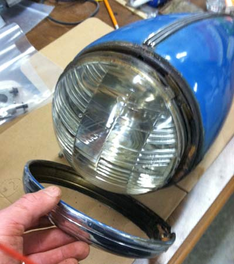
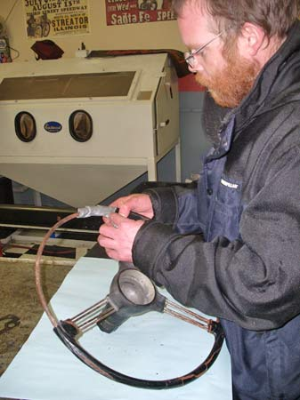
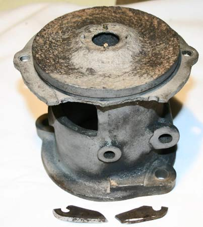
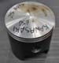
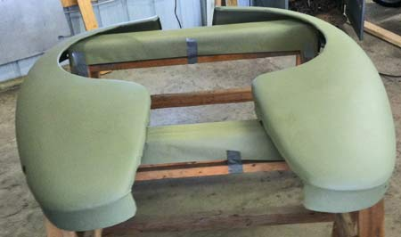
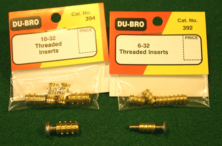

Latest News
A Restoration Journal
While my needs were simple in my mind, the reality of finding this was actually pretty difficult. Local paint shops could supply unlimited gallons of acrylic urethane but they couldn't get a perfect match to the original paint. My original paint chips provided a paint code but nobody seemed to have access to those codes in their computers.
Steering Wheel Restoration
The Daimler SP250 (aka Daimler Dart) is a low-production British sports car of the late '50s/early '60s with a 2.5-liter Hemi V-8 engine, a fish mouth fiberglass body with tail fins and Triumph TR3 underpinnings. According to online research, this car was available with either a standard or Deluxe steering wheel.
Repairing a Brittle Metal
No sense in tossing a hard-to-find cast iron part because it's cracked or broken. Instead of drilling out the end of the crack and putting in a bolt, repairing the cast iron to join the surfaces is a better way to prevent further cracking.The broken or missing pieces are long gone, so the only practical method to saving this rotor is to build up the missing round section. Even though the edges along the crack are jagged, it looks like the adhesive will need some help in getting the bond strength we desire.
Exclusive Powdercoat Saves Unobtanium Pistons
According to Joe Stanley Line2Line Coatings' abradable powder coating can actually give an "unobtanium" (no longer available) antique car piston a longer service life. Line2Line is licensed to manufacture and apply these patented coatings that have clearance control, anti-galling and low friction properties. Stanley, a former motorcycle racer, is Line2Line's VP of Powersports..Stanley was at the PRI Show to promote clearance control coatings for racing applications, but their benefits can also help car collectors and restorers.
Platinum Body Filler
Smoothing out some small dents an wrinkles proved to be not too difficult. But sanding (and more sanding) was a tedious requirement. Did I mention that I had to do a lot of sanding are fender metal was scuffed with 60-grit sandpaper and the first application of 3M Platinum Plus body filler was applied. Then I sanded it down and applied more. Then I repeated the process. Again. And again. And...well you get the point! There isn't a whole lot to mess up while applying body filler and a worst case scenario just sees you sanding it all off.
How to Use Threaded Rivets
There are many hardware fasteners that have appeared in the automotive trade ranging from square head nuts and bolts, Phillips head screws to today's Torx fasteners. As our restoration projects continue to challenge us, we continue to seek hardware and fasteners to overcome problems. Helicoils are a good example and to this list we can add the Threaded Rivet or Slot-less Screw. It is a simple fastener that has the appearance of a rivet, a domed head with no visual signs of using a tool to tighten its grip.